Chapter 3. 그래프 인과모델#
그래프 모델 집중 훈련#
인과 그래프 예시#
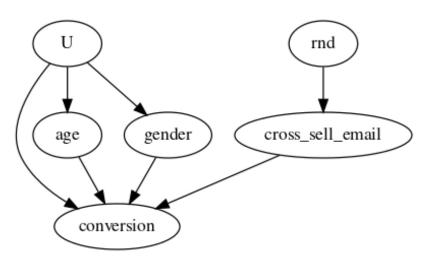
인과 그래프는 DAG(directed acyclic graph)이라고도 불리며, 방향이 있있고, 순환되는 부분이 없는 유향 비순환 그래프이다.
화살표는 각 인과 관계를 나타낸다. 예를 들어, conversion의 원인은 cross_sell_email (교차 판매 이메일 배송), age, gender 이다.
U는 관측되지 않은 변수를 뜻한다.
흥미로운 점으로 가장 중요한 정보가 그래프 안에 없을 수도 있다.
→ 우리가 개념적으로 알고 있는 영역들을 도식화하여 인과관계를 표현하고 연관성이 어떻게 흐르는지, 어디에서 편향이 발생하고 어떻게 통제해야 편향을 막을 수 있는지를 쉽게 이해할 수 있는 표현 방법
인과 그래프에서의 변수 관계 유형#
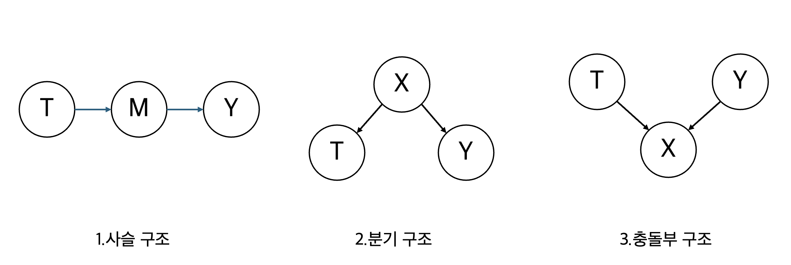
인과 그래프에서는 대표적으로 3가지 구조가 있다.
1) 사슬 구조 (Chain)#
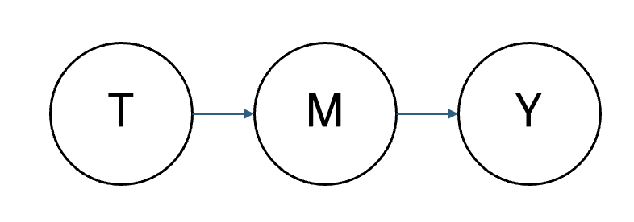
T는 M의 원인, M은 Y의 원인. 중간 노드 M은 매개자 (Mediator)라고 불림
사슬 구조에서의 연관성
\(T \not\perp M\) : 종속 (dependent)
\(M \not\perp Y\) : 종속
\(T \not\perp Y\) : 종속
\(T \perp Y \mid M\) : 독립
사슬 구조 예시
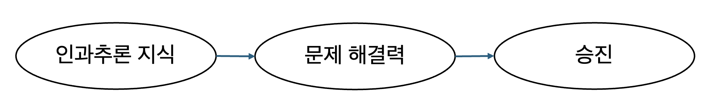
인과관계
인과추론을 알게되면 문제해결력이 향상
문제해결력이 향상되면 승진할 가능성이 높아짐
따라서, 인과적 지식은 문제해결력을 향상하고, 승진의 원인이 됨
연관관계
인과추론 전문성이 높을 수록 승진할 가능성이 높음
승진 가능성이 높을 수록 인과추론 지식이 많을 확률도 높아짐
→ 인과관계가 한 방향으로 존재하더라도 서로 연관성이 있음. 이렇게 두 변수가 연관성 있으면 ‘독립’이 아님
즉, 인과추론 지식 $\not\perp$ 승진
조건부일 경우?
변수를 고정하는 것이라고도 함
해당 변수의 영향을 통제하는 것
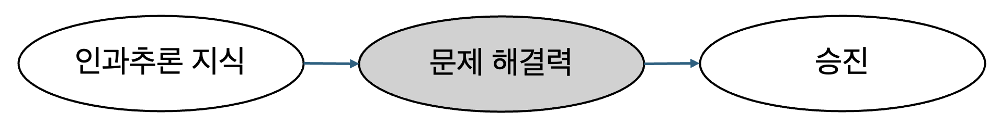
문제 해결력이 동일한 사람들을 살펴보면, 인과추론 지식만 가지고 승진 가능성에 대한 정보를 알 수 없음
→ 인과추론 지식 \(\perp\) 승진 \(\mid\) 문제해결력
2) 분기 구조 (Fork)#
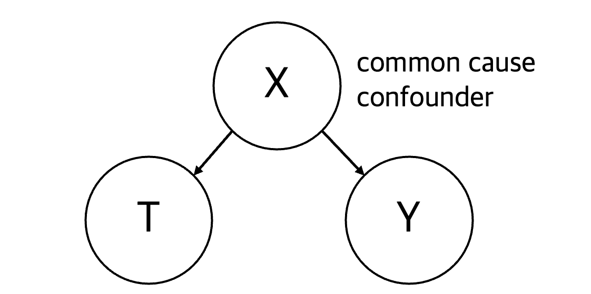
T의 원인은 X, Y의 원인도 X.
X를 공통 원인 (commmon cause)라 부르며, 교란 요인(confounder)라고도 한다.
분기 구조에서의 연관성
\(T \not\perp X\) : 종속
\(X \not\perp Y\) : 종속
\(T \not\perp Y\) : 종속
\(T \perp Y \mid X\) : 독립
분기 구조 예시
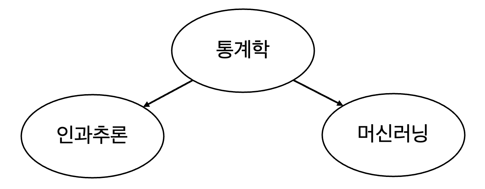
인과관계
통계학 덕분에 인과추론과 머신러닝을 더 많이 알게 됨
인과추론을 잘 알아도 머신러닝에 도움이 되지는 않으며, 그 반대도 마찬가지
연관관계
인과추론을 잘 안다면, 머신러닝도 능숙할 가능성이 높음
분기 구조 예시 2)
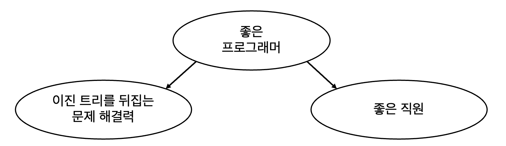
인과관계
훌륭한 프로그래머가 좋은 성과를 냄 (좋은 프로그래머 → 좋은 직원)
좋은 프로그래머라면 답변할 수 있을 만한 질문을 함 (좋은 프로그래머 → 문제해결력)
연관관계
질문에 답할 경우, 좋은 직원이 될 가능성이 높음
조건부일 경우?
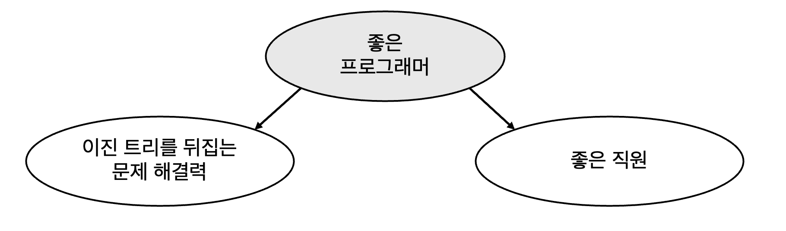
지원자가 좋은 프로그래머임을 이미 아는 경우,
문제 해결력이 좋다고 좋은 직원이 될 것인지에 대한 정보를 알 수 없음
→ 문제 해결력 \(\perp\) 좋은 직원 \(\mid\) 좋은 프로그래머
3) 충돌부 구조 (Collider)#
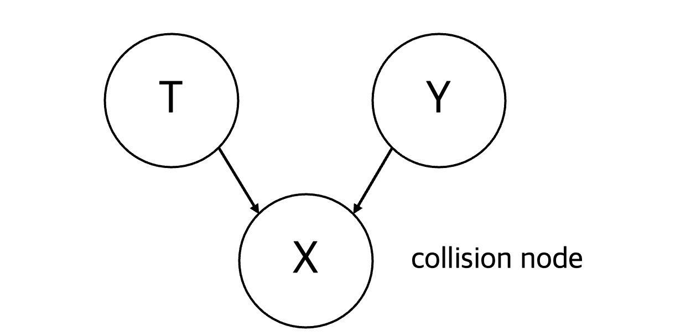
X의 원인은 T, Y 모두
T와 Y 사이에 직접적인 관계는 없는 경우
X를 collision node 혹은 common effect라고 부르며, 충돌부 구조를 Immorality 라고 부르기도 함. (연관성 없는 두 부모…)
충돌부 구조에서의 연관성
\(T \perp Y\) : 독립
\(T \not\perp X\) : 종속
\(X \not\perp Y\) : 종속
\(T \not\perp Y \mid X\) : 종속
충돌부 구조 예시 1)
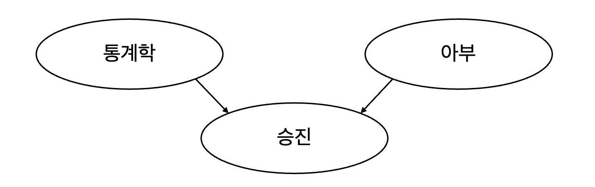
인과관계
통계를 잘 알거나, 아부를 잘하는 사람이 승진할 수 있음
연관관계
통계에 얼마나 능숙한지를 아는 게 얼마나 아부를 잘하는 지에 관해서는 알 수 없음
조건부일 경우?
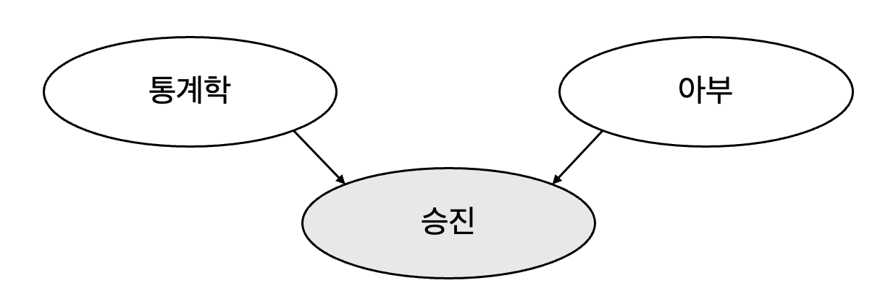
승진을 했다면, 통계 수준으로 아부 수준을 알 수 있음
통계를 잘 알지 못하지만 승진을 했다면, 상사에게 아부를 잘 할 가능성이 높음
통계를 잘 안다면 통계수준이 이미 승진을 설명했으므로 아부를 잘 하지 못할 가능성이 높음
→ 통계학 \(\not\perp\) 아부 \(\mid\) 승진
다른 요인에 의해 설명되는 현상 (explaining away)이라고도 함
충돌부 구조 예시 2)
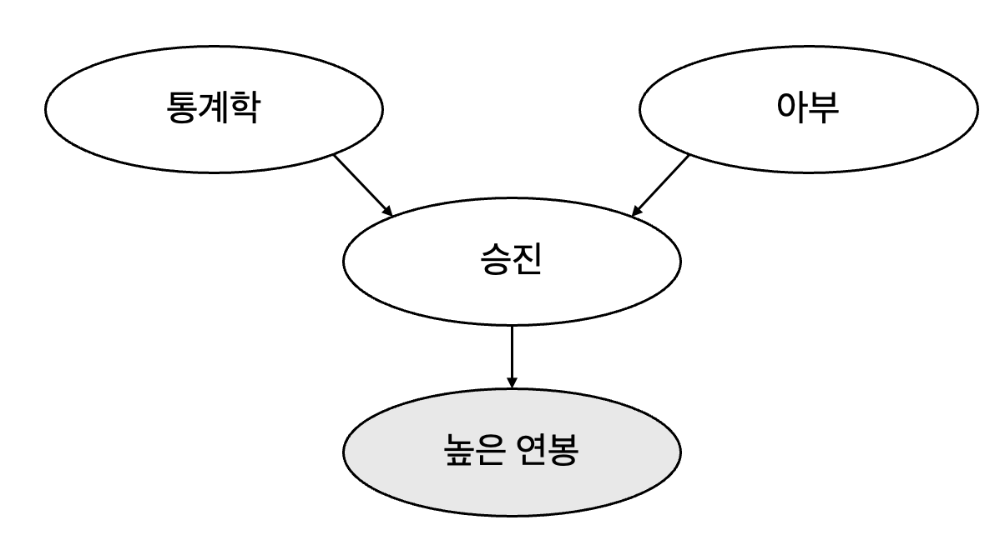
승진(collision 노드)을 조건으로 두지않고, 해당 충돌부의
결과를 조건부로 두어도 충돌부의 원인들은 종속이 됨승진 정보를 몰라도 거액의 연봉 정보를 안다면, 통계 지식과 아부는 종속적인 관계가 됨
연관성 흐름 치트 시트#

위의 세 가지(Chain, Fork, Collider) 구조를 알면 독립성과 연관성에 대한 흐름의 일반적인 규칙을 정리
퀴즈)#
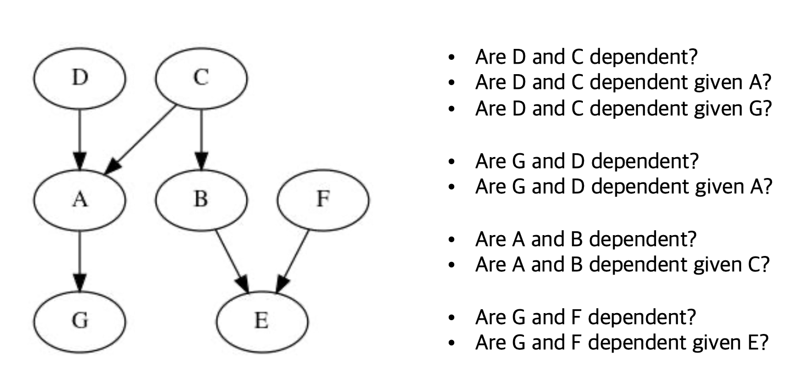
정답
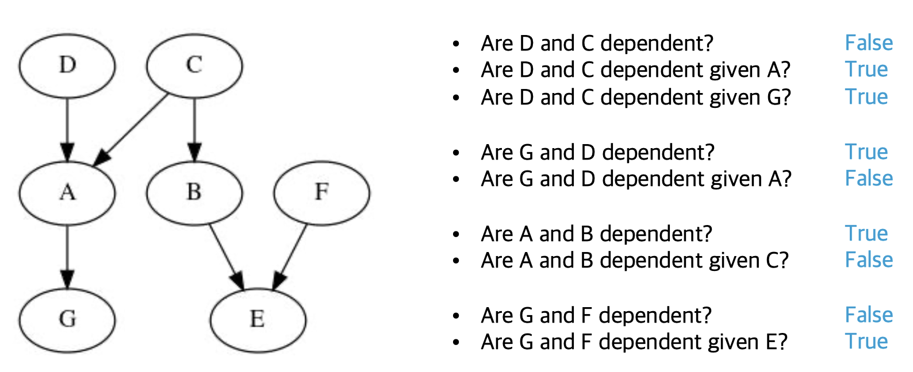
식별 재해석#
기업에서 컨설팅을 받는게 이후 6개월 수익에 도움이 되는지 알고 싶음
이전 6개월의 수익이 좋은 경우 좋은 컨설턴트를 고용할 가능성이 높음
그리고, 이전에도 수익이 좋았으면 미래에도 수익이 좋을 것
이를 인과그래프로 나타내면,
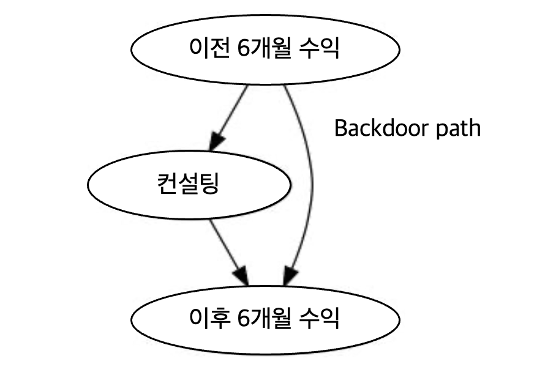
컨설팅과 6개월 이후 수익에는 두가지 흐름이 연관됨
직접적인 인과 경로
공통원인 때문에 교란받는 비인과 경로 (뒷문 경로, Backdoor path라고도 함)
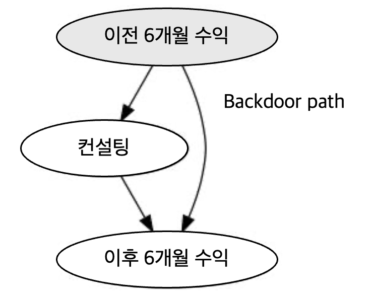
컨설팅과 6개월 이후 인과관계를 식별하려면, 인과 경로를 하나만 남겨야함
공통 원인인 이전 6개월 수익을 조건부로 설정하면 해당 경로가 닫힌다
조건부 독립성 가정(CIA; Conditional Independence Assumption)#
회사의 과거 실적(이전 6개월 수익)이 비슷한 실험군으로 실험하면, 이후 6개월 수익은 평균적으로 같음
= 공변량 X 수준이 동일한 대상을 비교하면, 잠재적 결과는 평균적으로 같음
양수성 (Positivity) 가정#
회사의 과거 실적(이전 6개월 수익)이 비슷한 대상이 대조군(컨설팅하지 않음)에도 있어야함
X의 모든 그룹에 실험군과 대조군의 실험대상이 반드시 존재해야함
없다면, 그룹 간의 차이를 정의할 수 없음
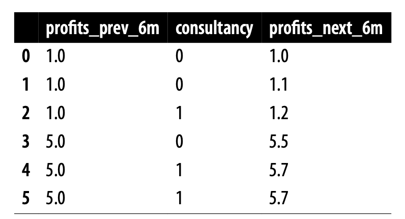
실험군 (컨설턴트를 고용한 회사) vs 대조군(고용하지 않은 회사) 비교하면?
실험군 mean(profits_next_6m) = 4.2
대조군 mean(profits_next_6m) = 2.53
→ 실험군 - 대조군 = $ 1.66 (million)
⚠️ 이 값으로 컨설팅이 회사 실적에 미치는 인과 효과라고 할 수 없음
과거 실적이 비슷한 회사들로 본다면?
profits_prev_6m = 1
실험군 - 대조군 = 1.2 - 1.05 = 0.15
profits_prev_6m = 5
실험군 - 대조군 = 5.7 - 5.5 = 0.2
→ 각 그룹의 크기를 가중치로 사용(여기서는 동일)하여 계산하면, $ 0.175 (million)라고 결론이 나옴
가중치로 계산하는 방법 예시)
아래 케이스인 경우, 아래와 같이 계산
n
실험군-대조군
(profits_prev_6m) = 5.0
27
0.2
(profits_prev_6m) = 1.0
3
0.15
0.2 x (27/30) + 0.15 x (3/30) = 0.195
두 가지 주요 편향#
1) 교란 편향#
뒷문 경로가 있을 경우 발생
처치와 결과가 공통적인 원인을 공유하는 경우
새로운 교육 프로그램이 관리자의 참여도를 높이는지 알고 싶음
잘하고 있는 관리자만 교육에 참석하는 경향
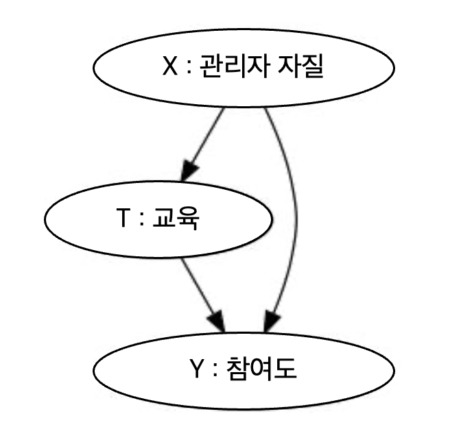
→ 처치와 결과의 공통원인을 보정해야함
그러나 항상 공통원인을 보정할 수는 없다.
원인을 알 수 없거나, 원인을 알아도 측정하지 못하는 경우
관리자 자질은 측정할 수 없음
대리 교란 요인을 통제하자
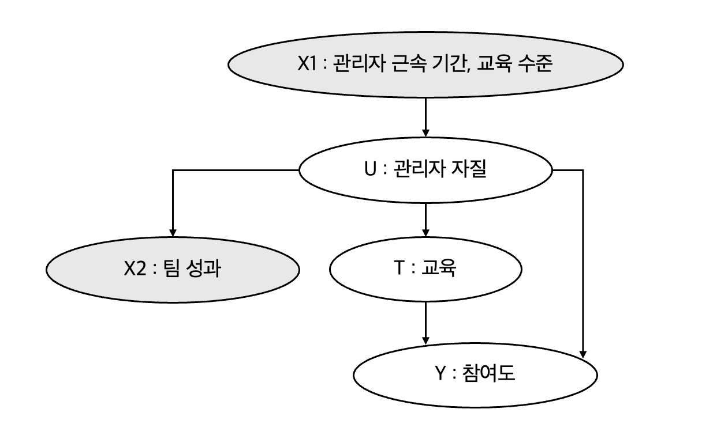
관리자 자질에 대한 대리변수로 사용할 수 있는 측정된 변수들을 통제하면 편향을 줄이는데 도움됨
처치를 무작위로 하면, 교란 요인을 파악하기 쉬워진다 (랜덤화 재해석)
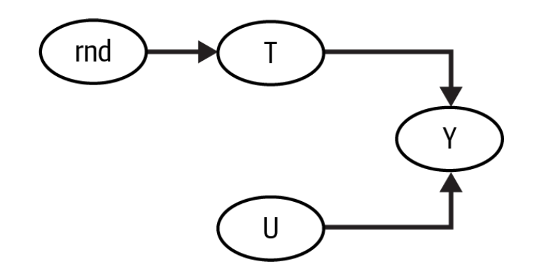
많은 연구에서는 교란 요인이 중요한 문제임
모든 교란요인을 통제했는지 확신하기 어렵기 때문
그러나 실무에서는 A/B 테스트를 통해, 처치의 유일한 원인이 랜덤성(rnd)인 그래프로 바꿀 수 있음
2) 선택 편향#
교란편향은 처치와 결과의 공통 원인을 통제하지 않았을 때 발생하지만, 선택 편향은 common effect (충돌부 구조의 충돌 노드)와 mediator (사슬 구조의 중간 노드)에 대한 조건부와 더 밀접한 관련이 있음
신규 기능 NPS 평가 사례
소프트웨어에서 신규 기능의 영향을 평가하고 싶어함
→ 무작위로 고객에게 기능을 배포 (고객 중 10%는 무작위로 신규 기능 사용)
→ 이 기능이 만족도를 높였는지 알고 싶어 NPS (순고객추천지수)를 설문조사를 통해 측정함
신규 기능을 사용하지 않고 NPS 설문에 응답한 고객보다 신규 기능을 사용하고 NPS 설문에 응답한 고객들의 NPS 점수가 더 높았다.
이 차이가 신규 기능이 NPS에 미친 인과효과 때문이라고 할 수 있을까?
→ No. 설문에 응답한 사람들에게서만 NPS를 측정했기 때문 (선택 편향)
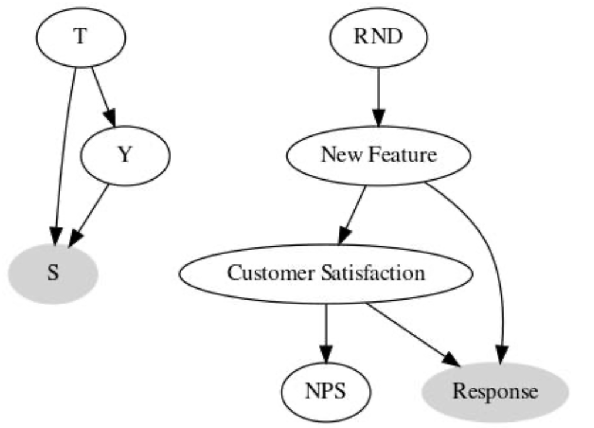
공통 효과 (설문 응답)을 조건부로 두면 선택 편향이 생김
신규 기능과 고객만족도에 연관성이 생기기 때문 - 비인과 경로로 발생하는 편향
편향에 대한 직관을 키워보자
만약 설문에 참여하지 않은 고객들의 응답까지 모두 받을 수 있다고 가정하면?
nps_0 = 대조군의 nps결과
nps_1 = 실험군의 nps결과
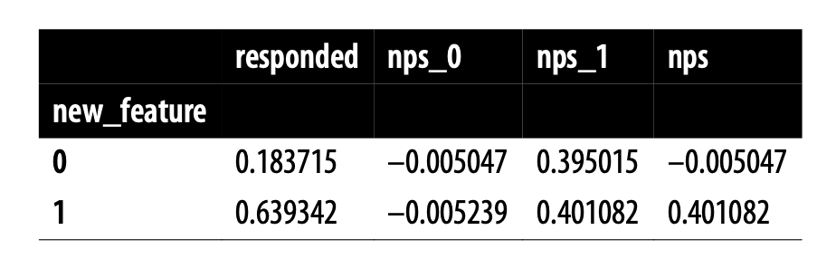
→ 실험군, 대조군 모두 0.4 만큼 차이남 → 신규 기능이 NPS를 0.4 만큼 높이는 것이라고 볼 수 있음
그러나 실제라면?
nps_0, nps_1 열을 볼 수 없다.
설문에 응답하지 않은 사람들의 응답을 볼 수 없다.
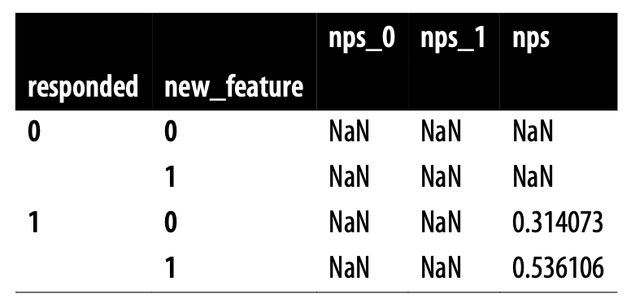
→ 실험군 - 대조군 차이가 0.22 (0.4의 절반 수준) 에 불과함
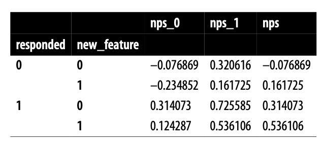
→ 값이 채워져있다면 (가정) 위와 같은 값일 것임.
응답한 사람들의 nps가 높음
만족한 고객이 설문에 응답할 가능성이 더 높기 때문
선택편향 보정은 어떻게 할까?
다른 관측가능한 변수를 활용하자!
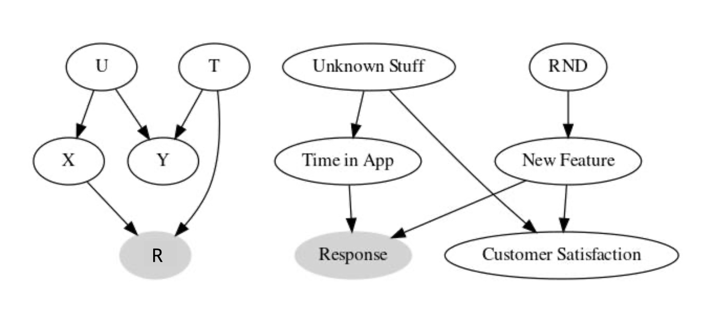
- 설문에 응답하는 요인에 영향을 주는 것
- 예시) 앱 사용 시간, 신규 기능
- 앱 사용 시간이 비슷한 유저들끼리 비교하자!
- 앱 사용 시간이 많은 유저를 1, 사용 시간이 적은 유저들을 0으로 두고 비교하면 편향을 줄일 수 있음
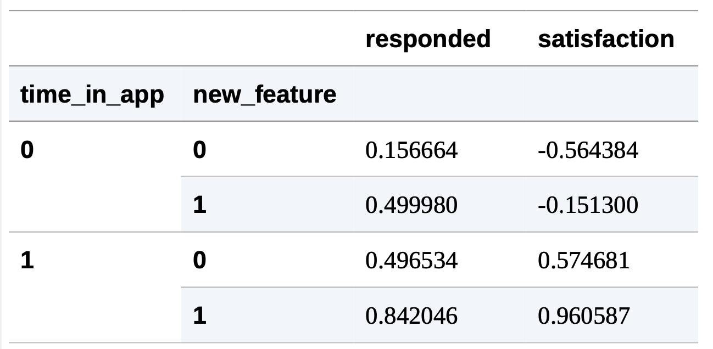
매개자 (Mediator)를 조건부 설정할 때 발생할 수 있는 편향
인사팀에서 일하면서, 성차별이 있는지, 동일한 자격을 갖춘 남성과 여성이 다르게 임금을 받는지 알고 싶다고 가정
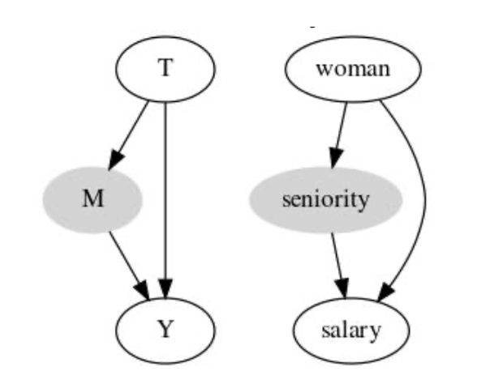
- 이 분석을 수행할 때 직급(Seniority Level)의 통제를 고려할 수 있음
- 그러나 woman → salary 간의 관계는 2가지 경로가 있음
- woman → seniority → salary = 간접 경로
- woman → salary = 직접 경로
- 직급 (seniority)을 통제하면, 직접 경로로 인한 차별만 식별할 수 있음
- 성별 때문에 승진을 못하는 케이스는 알 수 없음
요약#
인과 그래프의 주요 구조와 연관성 흐름을 알아봄
사슬 구조 (Chain), 분기 구조 (Fork), 충돌부 구조 (Collider)
치트 시트
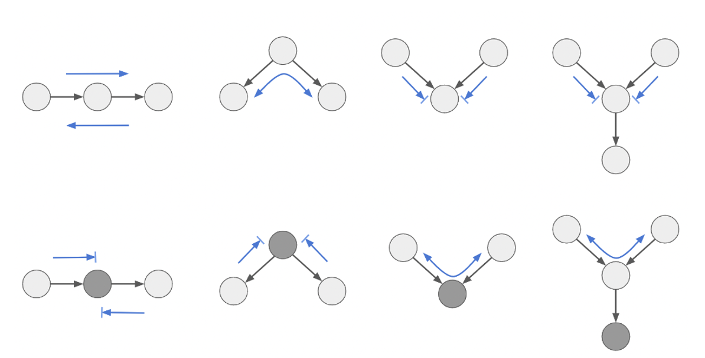
교란 편향과 선택 편향의 사례와 그에 따른 보정 방법
교란 편향 : 처치와 결과가 공통 원인을 공유하는 경우
대리 교란 요인을 통제
무작위 처치
선택 편향 : 공통 효과을 조건부로 두는 경우
관측가능한 변수를 통제